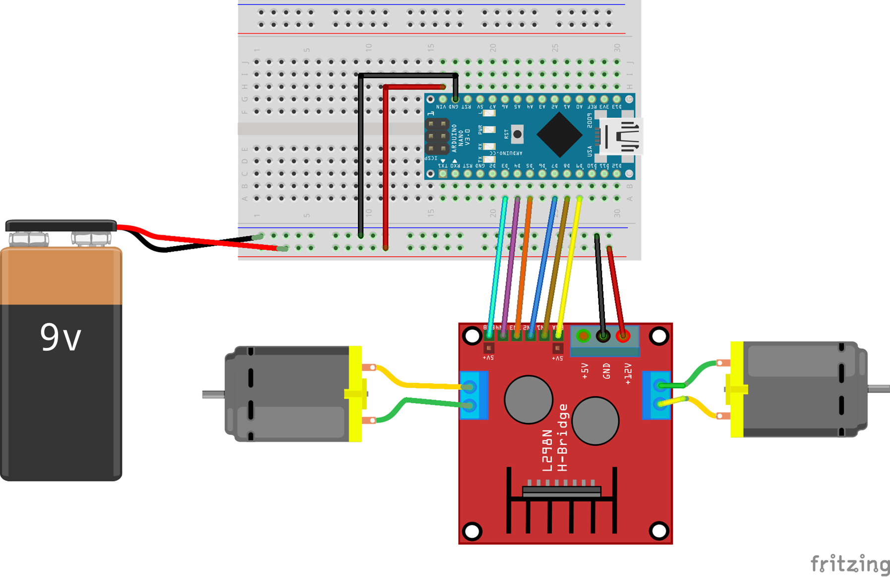
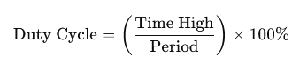

L298 Motor Driver and N20 Gear Motor Tutorial with Arduino Nano and 9V Battery¶

Introduction¶
In this tutorial, we will learn how to control N20 motors using an L298 motor driver and Arduino Nano. This guide covers the essential components, wiring setup, and programming to help you get started with motor control.
Objective¶
- Learn how to control N20 motors using an L298 motor driver and Arduino.
Components Needed¶
- Arduino Uno
- L298 Motor Driver
- N20 Motors (2x)
- Breadboard
- Jumper wires
- 9V battery with connector
- 9V battery clip
Key Learning Points¶
- Understand the wiring and connection setup for controlling motors.
- Write Arduino code to control motor speed and direction.
- Utilize the L298 motor driver to interface between Arduino and N20 motors.
Steps to Follow¶
- Connect the L298 motor driver to the Arduino.
- Connect the N20 motors to the L298 motor driver.
- Make necessary power connections with the 9V battery.
- Upload and execute the Arduino code to test motor control.
Expected Outcomes¶
- Successfully control the movement (forward, backward, left turn, right turn) of two N20 motors.
- Adjust motor speed using the enable pins on the L298 motor driver.
Prerequisites¶
- Basic understanding of Arduino programming.
- Familiarity with breadboard and basic electronics.
Safety Notes¶
- Ensure all connections are secure to prevent short circuits.
- Be cautious with the 9V battery to avoid rapid depletion and overheating.
Theory Input¶
The L298 motor driver is an integrated circuit that allows you to control the speed and direction of two DC motors. It uses H-bridge circuits to control the motors. By adjusting the PWM (Pulse Width Modulation) signals on the enable pins, you can control the speed of the motors. The direction is controlled by setting the IN1, IN2, IN3, and IN4 pins to HIGH or LOW.
Simplified Example Code¶
Here's a simplified example to get you started with basic motor control:
// Motor A connections
#define enA 3
#define in1 4
#define in2 5
// Motor B connections
#define enB 9
#define in3 8
#define in4 7
void setup() {
// Set all the motor control pins to outputs
pinMode(enA, OUTPUT);
pinMode(in1, OUTPUT);
pinMode(in2, OUTPUT);
pinMode(enB, OUTPUT);
pinMode(in3, OUTPUT);
pinMode(in4, OUTPUT);
// Turn off motors - Initial state
digitalWrite(in1, LOW);
digitalWrite(in2, LOW);
digitalWrite(in3, LOW);
digitalWrite(in4, LOW);
}
void loop() {
// Move forward
moveForward();
delay(2000); // Move forward for 2 seconds
// Move backward
moveBackward();
delay(2000); // Move backward for 2 seconds
// Stop
stopMotors();
delay(2000); // Stop for 2 seconds
}
void moveForward() {
// Motor A forward
digitalWrite(in1, HIGH);
digitalWrite(in2, LOW);
// Motor B forward
digitalWrite(in3, HIGH);
digitalWrite(in4, LOW);
// Set speed
analogWrite(enA, 255); // Max speed for Motor A
analogWrite(enB, 255); // Max speed for Motor B
}
void moveBackward() {
// Motor A backward
digitalWrite(in1, LOW);
digitalWrite(in2, HIGH);
// Motor B backward
digitalWrite(in3, LOW);
digitalWrite(in4, HIGH);
// Set speed
analogWrite(enA, 255); // Max speed for Motor A
analogWrite(enB, 255); // Max speed for Motor B
}
void stopMotors() {
// Turn off motors
digitalWrite(in1, LOW);
digitalWrite(in2, LOW);
digitalWrite(in3, LOW);
digitalWrite(in4, LOW);
}

Wiring Instructions:¶
- Connect the L298 Motor Driver to the Arduino:
- Connect
EN A(Enable A) of L298 to Arduinopin 3. - Connect
IN1of L298 to Arduinopin 4. - Connect
IN2of L298 to Arduinopin 5. - Connect
EN B(Enable B) of L298 to Arduinopin 9. - Connect
IN3of L298 to Arduinopin 7. -
Connect
IN4of L298 to Arduinopin 8. -
Connect the Motors:
- Connect the first N20 motor to
OUT1andOUT2of L298. -
Connect the second N20 motor to
OUT3andOUT4of L298. -
Power Connections:
- Connect the
12Vterminal of L298 to the positive terminal of the 9V battery. -
Connect the
GNDterminal of L298 to the negative terminal of the 9V battery and also to the GND of the Arduino. -
Connect the 5V and GND:
- Connect
5Vof L298 to the5Vpin of the Arduino. - Ensure the GND of L298, Arduino, and the 9V battery are all connected together.
Additional Tasks¶
Task 1: Change the Motor Speed¶
Objective
Modify the motor speed using PWM (Pulse Width Modulation).Instructions
1. In the existing code, adjust the `analogWrite` value on the `enA` and `enB` pins to control the motor speed. 2. Experiment with different values (0-255) to observe the speed changes.Code Example
void loop() {
// Move forward at half speed
digitalWrite(in1, HIGH);
digitalWrite(in2, LOW);
analogWrite(enA, 128); // Half speed
digitalWrite(in3, HIGH);
digitalWrite(in4, LOW);
analogWrite(enB, 128); // Half speed
delay(2000); // Run for 2 seconds
// Stop motors
stopMotors();
delay(1000); // Stop for 1 second
// Move backward at quarter speed
digitalWrite(in1, LOW);
digitalWrite(in2, HIGH);
analogWrite(enA, 64); // Quarter speed
digitalWrite(in3, LOW);
digitalWrite(in4, HIGH);
analogWrite(enB, 64); // Quarter speed
delay(2000); // Run for 2 seconds
// Stop motors
stopMotors();
delay(1000); // Stop for 1 second
}
Hint
Use `analogWrite(enA, speed)` and `analogWrite(enB, speed)` to control the speed, where `speed` ranges from 0 to 255.Task 2: Execute a Turn¶
Objective
Execute a turn by controlling the speed and direction of two motors.Instructions
1. To turn, one motor should run forward while the other runs backward. 2. Adjust the speed and duration to make a smooth turn.Code Example
void loop() {
// Move forward
moveForward();
delay(2000); // Move forward for 2 seconds
// Turn right
turnRight();
delay(1000); // Turn right for 1 second
// Move forward
moveForward();
delay(2000); // Move forward for 2 seconds
// Stop
stopMotors();
delay(1000); // Stop for 1 second
}
void turnRight() {
// Motor A forward
digitalWrite(in1, HIGH);
digitalWrite(in2, LOW);
analogWrite(enA, 255); // Full speed
// Motor B backward
digitalWrite(in3, LOW);
digitalWrite(in4, HIGH);
analogWrite(enB, 255); // Full speed
}
Hint
Set one motor to run forward and the other to run backward to execute a turn.These simplified tasks will help you understand how to control motor speed, connect multiple motors, and execute turns with the L298 motor driver and Arduino Nano. Experiment with different values and configurations to fully explore the capabilities of your setup. Happy tinkering!
Theory Behind Pulse Width Modulation (PWM)¶
Pulse Width Modulation (PWM) is a technique used to control the amount of power delivered to an electrical device by switching the power supply on and off at a rapid rate. In the context of motor control, PWM allows you to adjust the speed of a motor by varying the duty cycle of the signal applied to it.
Key Concepts¶
- Duty Cycle:
- The duty cycle of a PWM signal is the percentage of one period in which the signal is high (on). It is defined as:

-
For example, a 50% duty cycle means the signal is on for half the period and off for the other half.
-
Frequency:
- The frequency of a PWM signal is the rate at which the PWM cycles repeat per second. It is measured in Hertz (Hz).
-
A higher frequency results in smoother motor operation as the motor receives power more frequently.
-
Period:
- The period of a PWM signal is the inverse of the frequency. It represents the duration of one complete cycle of the PWM signal.
How PWM Controls Motor Speed¶
By varying the duty cycle of the PWM signal applied to a motor's control pin, you can effectively control the average voltage and power delivered to the motor. Here's how it works:
- High Duty Cycle:
-
A high duty cycle (e.g., 80%) means the signal is on for 80% of the time and off for 20% of the time. This results in the motor receiving more power and running faster.
-
Low Duty Cycle:
- A low duty cycle (e.g., 20%) means the signal is on for 20% of the time and off for 80% of the time. This results in the motor receiving less power and running slower.
Benefits of Using PWM¶
- Efficiency:
-
PWM is highly efficient because it reduces power losses that occur in other methods of power control. When the switch is off, almost no power is consumed.
-
Smooth Control:
-
PWM allows for smooth control of motor speed without introducing significant noise or vibration.
-
Heat Reduction:
- By efficiently controlling the power, PWM reduces the amount of heat generated by the motor driver and the motor itself.
PWM in Arduino¶
In Arduino, PWM is implemented using the analogWrite function. The analogWrite function generates a PWM signal on specified pins with a default frequency of approximately 490 Hz (for most pins).
Here’s an example of using PWM to control motor speed in Arduino:
// Motor connections
#define enA 3
#define in1 4
#define in2 5
void setup() {
// Set all the motor control pins to outputs
pinMode(enA, OUTPUT);
pinMode(in1, OUTPUT);
pinMode(in2, OUTPUT);
}
void loop() {
// Move motor forward at 50% speed
digitalWrite(in1, HIGH);
digitalWrite(in2, LOW);
analogWrite(enA, 128); // 50% duty cycle
delay(2000); // Run for 2 seconds
// Move motor forward at full speed
analogWrite(enA, 255); // 100% duty cycle
delay(2000); // Run for 2 seconds
// Move motor forward at 25% speed
analogWrite(enA, 64); // 25% duty cycle
delay(2000); // Run for 2 seconds
// Stop motor
analogWrite(enA, 0); // 0% duty cycle
delay(2000); // Stop for 2 seconds
}
In this example:
- analogWrite(enA, 128); sets a 50% duty cycle, resulting in half the maximum speed.
- analogWrite(enA, 255); sets a 100% duty cycle, resulting in full speed.
- analogWrite(enA, 64); sets a 25% duty cycle, resulting in quarter speed.
- analogWrite(enA, 0); sets a 0% duty cycle, stopping the motor.
By understanding and utilizing PWM, you can precisely control the speed and behavior of your motors in an efficient and effective manner.